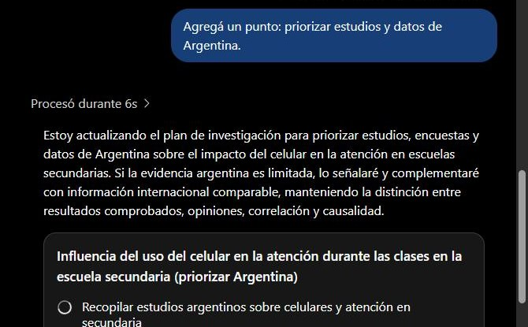
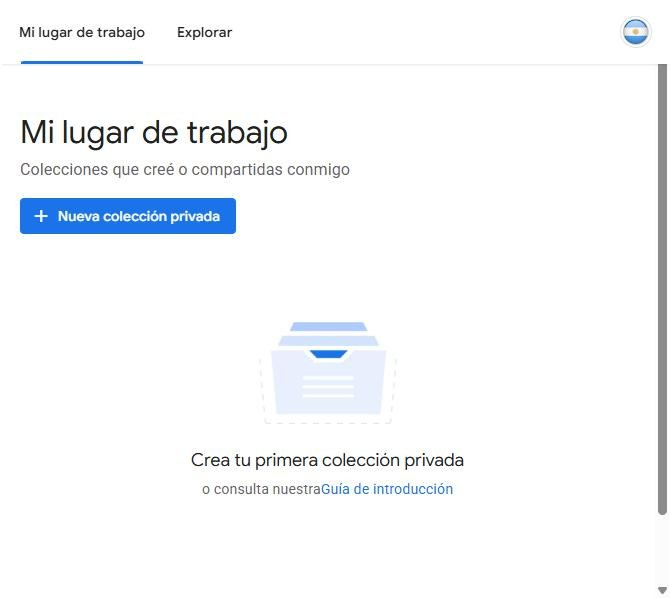
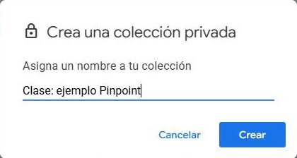
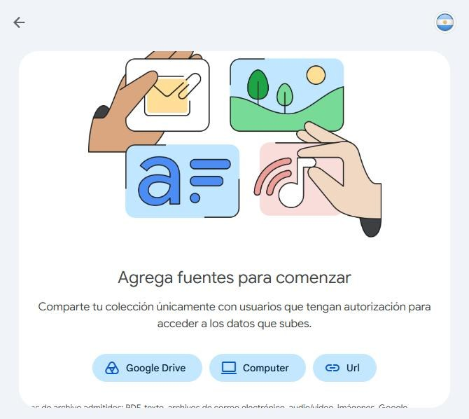
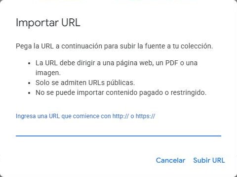
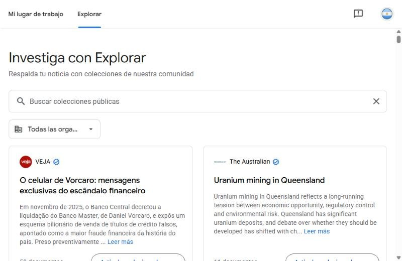

Deep Research
y Pinpoint
Qué hace cada una, cómo se usan y cuándo conviene cada una.
Lo que ya vimos
- NotebookLM trabaja con las fuentes que vos cargás.
- Fake news: antes de creer un dato, se verifica la fuente.
- Hemerotecas: la IA ordena lo que vos encontraste en fuentes reales.
¿Qué es Deep Research?
- Es una función de ChatGPT. En español aparece como Investigación profunda.
- No responde solo con lo que ya sabe: busca, lee y compara fuentes.
- Entrega un informe con citas para comprobar de dónde salió cada dato.
Activarla
 1
2
1
2
- 1Tocá el botón + al lado de donde se escribe.
- 2Elegí Investigación profunda ("Obtén un informe detallado").
Escribir la pregunta
 1
2
1
2
- 1La función queda marcada antes del texto.
- 2Escribís una pregunta completa y la enviás.
Revisar el plan
 1
2
3
1
2
3
- 1Editar: pedís cambios antes de empezar.
- 2Cancelar: no se hace la investigación.
- 3Comenzar: tiene una cuenta regresiva. Si no tocás nada, empieza sola.
Ajustar el plan
 1
2
1
2

3 4- 1Al tocar Editar, el plan queda citado.
- 2Escribís el cambio en "Continúa con preguntas o ajustes".
- 3Ejemplo: "priorizar estudios y datos de Argentina".
- 4ChatGPT rehace el plan con tu pedido.
Investiga
 1
2
1
2
- 1Muestra qué está haciendo y una barra de avance.
- 2Botón para detenerla.
El informe
 1
2
3
1
2
3
- 1Botón para descargar.
- 2Copiar contenido o exportar a Markdown, Word o PDF.
- 3Ver el informe en pantalla completa.
Probalo vos
El informe sale general y sin foco.
El informe responde lo que necesitás.
Simulador de Deep Research
Los mismos pasos que en ChatGPT: activar, preguntar, revisar el plan, investigar e informe.
¿Qué es Pinpoint?
- Es una herramienta de Google, parte de Journalist Studio.
- Nació para el periodismo de investigación. Hoy también apunta a académicos y creadores de contenido.
- No investiga Internet: trabaja con los documentos que vos cargás, aunque sean miles.
Crear una colección

1 2
3 4- 1Nueva colección privada.
- 2Explorar: colecciones públicas de medios.
- 3Le ponés un nombre.
- 4Crear.
Agregar documentos

1 2 3
- 1Desde Google Drive.
- 2Desde la computadora.
- 3Desde una URL.
Buscar
 1
2
3
1
2
3
- 1Buscar documentos.
- 2Cuántos documentos coinciden: 88 (de los 143 de la colección).
- 3La palabra aparece resaltada.
"frase exacta" entre comillas
-palabra para excluir
Messi O Scaloni para combinar (también con |)
Dentro del documento
 1
2
1
2
- 1Cuántas veces aparece la palabra: 1 de 18 menciones.
- 2Flechas para saltar de una mención a otra.
Filtrar la colección
 1
2
1
2
- 1Por fechas mencionadas en los documentos.
- 2Por personas, y más abajo por organizaciones y por ubicaciones.
- +Al lado de cada una: en cuántos documentos aparece.
Preguntarle a Gemini
 1
2
1
2
 3
4
3
4
- 1Opciones: Encontrar respuestas, Resume, Comparar, Extraer datos, Etiquetar documentos, Crear línea de tiempo.
- 2"Haz una pregunta sobre los documentos".
- 3Cada dato trae un marcador que lleva al documento.
- 4Guardar en sesiones.
Datos estructurados
 1
1
- ✓Convierte documentos con una estructura similar en una hoja de cálculo.
- 1Comenzar.
Colecciones públicas

- ✓Medios como Página|12, Clarín o La Nación publican colecciones.
- ✓Una colección pública se puede ver sin cuenta, en modo lectura.
Simulador de Pinpoint
Una colección de ejemplo para buscar, filtrar y preguntar como en Pinpoint.
Cara a cara
| Deep Research | Pinpoint | |
|---|---|---|
| Empresa | OpenAI | |
| Objetivo | Investigar y armar un informe | Investigar grandes colecciones de documentos |
| Web | Sí, es central | No es su función principal |
| Archivos propios | Sí | Sí, es central |
| Miles de documentos | Puede, según la tarea | Diseñado para eso |
| Audio y video | Con archivos compatibles | Transcripción y búsqueda |
| Tablas | No es su enfoque | Sí (Datos estructurados) |
| Resultado | Informe de investigación | Colección de documentos para investigar |
¿Cuál usarías?
1 / 6Alcances y límites
- En el plan gratuito, la cantidad de usos por mes es limitada.
- Tarda más que una respuesta común.
- Cada dato del informe tiene su fuente para revisar.
- Para crear colecciones propias hay que ser mayor de 18 años.
- Con cuenta de escuela o trabajo, el administrador puede tener que habilitarlo.
- Las colecciones públicas se ven sin cuenta.
¿Y en la vida diaria?
Elegir una carrera
Comparar planes, duración y salida laboral, con fuentes. Deep Research.
Antes de una compra grande
Comparar opiniones y características de varios sitios. Deep Research.
Trabajos prácticos
Partir de un informe con citas y revisar cada fuente. Deep Research.
Entrevistas y archivos propios
Pasar grabaciones a texto y buscar en documentos escaneados. Pinpoint.
La actividad de hoy
- En grupo, elegir un tema y escribir una pregunta completa.
- En el Simulador de Deep Research o en ChatGPT (una cuenta por grupo): + → Investigación profunda.
- Cuando aparezca el plan, tocar Editar y pedir un cambio antes de Comenzar.
- En el informe, abrir 2 citas y comprobar que la fuente diga lo mismo.
- Resolver la misión del Simulador de Pinpoint.
Deep Research investiga por vos.
Pinpoint te ayuda a investigar lo que ya tenés.
Verificar sigue siendo tu parte.